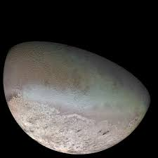

- It has 13 moons and faint rings
- Voyager 2 was the only spacecraft to visit Neptune
- Due to Pluto's orbit, sometimes Pluto is closeer to us than Neptune is
- Neptune's moon, Triton, is the only moon that's opposite of Neptune's direction

Neptune

A look at Neptune's storm

Neptune's largest moon, Triton